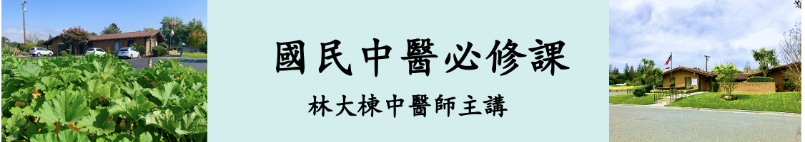

國民中醫必修課

【第一部分: 中醫基礎理論】
0001_陰陽_中醫陰陽的根本定義及應用
0002_陰陽_陰陽虛實之階段
0003_陰陽_中醫陰陽的其他應用１
0004_陰陽_中醫陰陽的其他應用２
0005_陰陽_氣血與陰陽
0006_陰陽_臟腑分陰陽
0007_陰陽_陰陽之間的關係
0008_陰陽_陰陽對立制約
0009_陰陽_陰陽互根
0010_陰陽_陰陽消長
0011_陰陽_陰陽轉化
0012_陰陽_陰陽衍化
0013_陰陽_陰陽互相隔拒
0014_陰陽_扶陽與滋陰
0015_五行臟腑_中醫五行理論：相生與相克
0016_五行臟腑_中醫五行理論：相侮與相乘
0017_五行臟腑_中醫五行理論：母子捕瀉
0018_五行臟腑_中醫五行臟腑理論
0019_五行臟腑_中醫五行臟腑理論之君火與相火
0020_五行臟腑_中醫臟象學簡介
0021_五行臟腑_心
0022_五行臟腑_心包
0023_五行臟腑_肝
0024_五行臟腑_脾
0025_五行臟腑_肺
0026_五行臟腑_腎
0027_五行臟腑_臟腑之間的關係
0028_五行臟腑_陰陽臟腑之間的虛實關係
0029_精氣血津液_概說
0030_精氣血津液_精
0031_精氣血津液_氣_各種氣的生成與相互關係_1
0032_精氣血津液_氣_各種氣的生成與相互關係_2
0033_精氣血津液_氣_各種氣的生成與相互關係_3
0034_精氣血津液_氣_各種氣的生成與相互關係_4
0035_精氣血津液_氣_氣的運動形式
0036_精氣血津液_氣_各種氣受損引起之病症舉例
0037_精氣血津液_血
0038_精氣血津液_血_和血有關的臟腑
0039_精氣血津液_血_血病的主因
0040_精氣血津液_津液_津和液的分別
0041_精氣血津液_津液_水液運化之相關臟腑總整理
0042_精氣血津液_津液_水液運化圖
【第二部分: 中醫病因學】
0043_中醫病因學_三因論
0044_中醫病因學_外因：六淫_風
0045_中醫病因學_外因：六淫_寒
0046_中醫病因學_外因：六淫_暑
0047_中醫病因學_外因：六淫_濕
0048_中醫病因學_外因：六淫_燥
0049_中醫病因學_外因：六淫_火
0050_中醫病因學_內因：七情與臟腑的關係
0051_中醫病因學_內因：七情與氣血的關係
0052_中醫病因學_不內不外因：飲食失宜致病
0053_中醫病因學_不內不外因：勞逸不當致病
【第三部分: 中醫標本理論的治病原則】
國民中醫必修課_0054_標本理論的治病原則_因果的辨別
國民中醫必修課_0055_標本理論的治病原則_只治本的時機
國民中醫必修課_0056_標本理論的治病原則_標本同治的時機
國民中醫必修課_0057_標本理論的治病原則_先治標再治本的時機
國民中醫必修課_0058_標本理論的治病原則_先治本再治標的時機
【第四部分: 中醫診斷學】
國民中醫必修課_0059_中醫診斷學_四診
國民中醫必修課_0060_中醫診斷學_望診：整體體態
國民中醫必修課_0061_中醫診斷學_望診：望色_五官_皮膚
國民中醫必修課_0062_中醫診斷學_望診：望鼻
國民中醫必修課_0063_中醫診斷學_望診：望眼
國民中醫必修課_0064_中醫診斷學_望診：望耳
國民中醫必修課_0065_中醫診斷學_望診：望髮
國民中醫必修課_0066_中醫診斷學_望診：望口唇
國民中醫必修課_0067_中醫診斷學_望診：望舌1
國民中醫必修課_0068_中醫診斷學_望診：望舌2
國民中醫必修課_0069_中醫診斷學_望診：望舌3
國民中醫必修課_0070_中醫診斷學_望診：望舌4
國民中醫必修課_0071_中醫診斷學_望診：望舌5
國民中醫必修課_0072_中醫診斷學_望診：望舌6
國民中醫必修課_0073_中醫診斷學_望診：望舌7
國民中醫必修課_0074_中醫診斷學_望診：望舌8
國民中醫必修課_0075_中醫診斷學_望診：望舌9
國民中醫必修課_0076_中醫診斷學_望診：望舌10
國民中醫必修課_0077_中醫診斷學_望診：望舌11
國民中醫必修課_0078_中醫診斷學_望診：望舌12
國民中醫必修課_0079_中醫診斷學_望診：望舌13
國民中醫必修課_0080_中醫診斷學_望診：小兒指診
國民中醫必修課_0081_中醫診斷學_小兒診斷要點
國民中醫必修課_0082_中醫診斷學_聞診要點
國民中醫必修課_0083_中醫診斷學_問診：十問
國民中醫必修課_0084_中醫診斷學_問診：問寒熱1
國民中醫必修課_0085_中醫診斷學_問診：問寒熱2
國民中醫必修課_0086_中醫診斷學_問診：問汗
國民中醫必修課_0087_中醫診斷學_問疹：問痛_問身痛
國民中醫必修課_0088_中醫診斷學_問診：問痛_問頭痛
國民中醫必修課_0089_中醫診斷學_問診：問二便_大便
國民中醫必修課_0090_中醫診斷學_問診：問二便_小便
國民中醫必修課_0091_中醫診斷學_問診：問飲食
國民中醫必修課_0092_中醫診斷學_問診：問飲水
國民中醫必修課_0093_中醫診斷學_問診：問睡眠1
國民中醫必修課_0094_中醫診斷學_問診：問睡眠2
國民中醫必修課_0095_中醫診斷學_問診：問睡眠3
國民中醫必修課_0096_中醫診斷學_切診：脈診和按診
國民中醫必修課_0097_中醫診斷學_切診：按診1
國民中醫必修課_0098_中醫診斷學_切診：按診之腹診1
國民中醫必修課_0099_中醫診斷學_切診：按診之腹診2
國民中醫必修課_0100_中醫診斷學_切診：按診之腹診3
國民中醫必修課_0101_中醫診斷學_切診：脈診1
國民中醫必修課_0102_中醫診斷學_切診：脈診2
國民中醫必修課_0103_中醫診斷學_切診：脈診3
國民中醫必修課_0104_中醫診斷學_切診：脈診4
國民中醫必修課_0105_中醫診斷學_切診：脈診5
國民中醫必修課_0106_中醫診斷學_切診：脈診6
國民中醫必修課_0107_中醫診斷學_切診：脈診7
國民中醫必修課_0108_中醫診斷學_切診：脈診8
【第五部分: 中醫辨證學】
國民中醫必修課_0109_中醫辨證學_辨證論治
國民中醫必修課_0110_中醫辨證學_八綱辨證
國民中醫必修課_0111_中醫辨證學_六經辨證
國民中醫必修課_0112_中醫辨證學_五行辨證
國民中醫必修課_0113_中醫辨證學_五行辨證＿母不生子
國民中醫必修課_0114_中醫辨證學_五行辨證＿相乘關係
國民中醫必修課_0115_中醫辨證學_五行辨證＿相侮關係
國民中醫必修課_0116_中醫辨證學_衛氣營血辨證
國民中醫必修課_0117_中醫辨證學_三焦辨證
國民中醫必修課_0118_中醫辨證學_氣血津液辨證＿氣
國民中醫必修課_0119_中醫辨證學_氣血津液辨證＿血
國民中醫必修課_0120_中醫辨證學_氣血津液辨證＿水
國民中醫必修課_0121_中醫辨證學_臟腑辨證
國民中醫必修課_0122_中醫辨證學_心和小腸辨證1
國民中醫必修課_0123_中醫辨證學_心和小腸辨證2
國民中醫必修課_0124_中醫辨證學_心和小腸辨證3
國民中醫必修課_0125_中醫辨證學_心和小腸辨證4
國民中醫必修課_0126_中醫辨證學_心和小腸辨證5
國民中醫必修課_0127_中醫辨證學_心和小腸辨證6&7
國民中醫必修課_0128_中醫辨證學_肺和大腸辨證1
國民中醫必修課_0129_中醫辨證學_肺和大腸辨證2
國民中醫必修課_0130_中醫辨證學_肺和大腸辨證3
國民中醫必修課_0131_中醫辨證學_肺和大腸辨證4
國民中醫必修課_0132_中醫辨證學_各種濕熱比較
國民中醫必修課_0133_中醫辨證學_脾和胃辨證1
國民中醫必修課_0134_中醫辨證學_脾和胃辨證2&3
國民中醫必修課_0135_中醫辨證學_脾和胃辨證4
國民中醫必修課_0136_中醫辨證學_脾和胃辨證5
國民中醫必修課_0137_中醫辨證學_肝和膽辨證1
國民中醫必修課_0138_中醫辨證學_肝和膽辨證2
國民中醫必修課_0139_中醫辨證學_肝和膽辨證3
國民中醫必修課_0140_中醫辨證學_肝和膽辨證4
國民中醫必修課_0141_中醫辨證學_肝和膽辨證5
國民中醫必修課_0142_中醫辨證學_肝和膽辨證6
國民中醫必修課_0143_中醫辨證學_腎和膀胱辨證1
國民中醫必修課_0144_中醫辨證學_腎和膀胱辨證2
國民中醫必修課_0145_中醫辨證學_腎和膀胱辨證3
【第六部分: 實用經絡針灸學】
國民中醫必修課_0146_實用經絡針灸學_人體經絡系統介紹
國民中醫必修課_0147_實用經絡針灸學_十二經脈
國民中醫必修課_0148_實用經絡針灸學_十二經絡循行時辰圖
國民中醫必修課_0149_實用經絡針灸學_奇經八脈和八脈交會穴
國民中醫必修課_0150_實用經絡針灸學_任脈
國民中醫必修課_0151_實用經絡針灸學_督脈
國民中醫必修課_0152_實用經絡針灸學_衝脈
國民中醫必修課_0153_實用經絡針灸學_帶脈
國民中醫必修課_0154_實用經絡針灸學_陽維脈
國民中醫必修課_0155_實用經絡針灸學_陰維脈
國民中醫必修課_0156_實用經絡針灸學_陽蹺脈
國民中醫必修課_0157_實用經絡針灸學_陰蹺脈
國民中醫必修課_0158_實用經絡針灸學_十二經別
國民中醫必修課_0159_實用經絡針灸學_絡脈、十五絡脈
國民中醫必修課_0160_實用經絡針灸學_十二筋經
國民中醫必修課_0161_實用經絡針灸學_十二皮部
國民中醫必修課_0162_實用經絡針灸學_特定穴：五輸穴
國民中醫必修課_0163_實用經絡針灸學_特定穴：俞穴（背俞）、募穴
國民中醫必修課_0164_實用經絡針灸學_特定穴：原穴、絡穴
國民中醫必修課_0165_實用經絡針灸學_特定穴：郗穴、會穴
國民中醫必修課_0166_實用經絡針灸學_特定穴：下合穴
國民中醫必修課_0167_實用經絡針灸學_手太陰肺經：總論1
國民中醫必修課_0168_實用經絡針灸學_手太陰肺經：總論2
國民中醫必修課_0169_實用經絡針灸學_手太陰肺經：中府B
國民中醫必修課_0170_實用經絡針灸學_手太陰肺經：天府A
國民中醫必修課_0170_實用經絡針灸學_手太陰肺經：天府B
國民中醫必修課_0171_實用經絡針灸學_手太陰肺經：尺澤A
國民中醫必修課_0171_實用經絡針灸學_手太陰肺經：尺澤B
國民中醫必修課_0172_實用經絡針灸學_手太陰肺經：孔最A
國民中醫必修課_0172_實用經絡針灸學_手太陰肺經：孔最B
國民中醫必修課_0173_實用經絡針灸學_手太陰肺經：列缺A
國民中醫必修課_0173_實用經絡針灸學_手太陰肺經：列缺B
國民中醫必修課_0174_實用經絡針灸學_手太陰肺經：太淵A
國民中醫必修課_0174_實用經絡針灸學_手太陰肺經：太淵B
國民中醫必修課_0175_實用經絡針灸學_手太陰肺經：魚際A
國民中醫必修課_0175_實用經絡針灸學_手太陰肺經：魚際B
國民中醫必修課_0176_實用經絡針灸學_手太陰肺經：少商A
國民中醫必修課_0176_實用經絡針灸學_手太陰肺經：少商B
國民中醫必修課_0177_實用經絡針灸學_六脈神劍
國民中醫必修課_0178_實用經絡針灸學_手陽明大腸經：總論
國民中醫必修課_0179_實用經絡針灸學_手陽明大腸經：商陽A
國民中醫必修課_0179_實用經絡針灸學_手陽明大腸經：商陽B
國民中醫必修課_0180_實用經絡針灸學_手陽明大腸經：二間、三間A
國民中醫必修課_0180_實用經絡針灸學_手陽明大腸經：二間、三間B
國民中醫必修課_0180_實用經絡針灸學_手陽明大腸經：二間、三間C
國民中醫必修課_0181_實用經絡針灸學_手陽明大腸經：合谷A
國民中醫必修課_0181_實用經絡針灸學_手陽明大腸經：合谷B
國民中醫必修課_0182_實用經絡針灸學_手陽明大腸經：曲池A
國民中醫必修課_0182_實用經絡針灸學_手陽明大腸經：曲池B
國民中醫必修課_0183_實用經絡針灸學_手陽明大腸經：肩髃A
國民中醫必修課_0183_實用經絡針灸學_手陽明大腸經：肩髃B
國民中醫必修課_0184_實用經絡針灸學_手陽明大腸經：迎香A
國民中醫必修課_0184_實用經絡針灸學_手陽明大腸經：迎香B
國民中醫必修課_0185_實用經絡針灸學_足陽明胃經：總論
國民中醫必修課_0186_實用經絡針灸學_足陽明胃經：承泣、四白、巨髎A
國民中醫必修課_0186_實用經絡針灸學_足陽明胃經：承泣、四白、巨髎B.mov
國民中醫必修課_0187_實用經絡針灸學_足陽明胃經：頰車、下關A
國民中醫必修課_0187_實用經絡針灸學_足陽明胃經：頰車、下關B
國民中醫必修課_0187_實用經絡針灸學_足陽明胃經：頰車、下關C
國民中醫必修課_0188_實用經絡針灸學_足陽明胃經：天樞A
國民中醫必修課_0188_實用經絡針灸學_足陽明胃經：天樞B
國民中醫必修課_0189_實用經絡針灸學_足陽明胃經：梁丘A
國民中醫必修課_0189_實用經絡針灸學_足陽明胃經：梁丘B
國民中醫必修課_0190_實用經絡針灸學_足陽明胃經：犢鼻
國民中醫必修課_0190_實用經絡針灸學_足陽明胃經：犢鼻A
國民中醫必修課_0190_實用經絡針灸學_足陽明胃經：犢鼻B
國民中醫必修課_0191_實用經絡針灸學_足陽明胃經：足三里A
國民中醫必修課_0191_實用經絡針灸學_足陽明胃經：足三里B
國民中醫必修課_0192_實用經絡針灸學_足陽明胃經：條口、上巨虛、下巨虛、豐隆A
國民中醫必修課_0192_實用經絡針灸學_足陽明胃經：條口、上巨虛、下巨虛、豐隆B
國民中醫必修課_0192_實用經絡針灸學_足陽明胃經：條口、上巨虛、下巨虛、豐隆C
國民中醫必修課_0192_實用經絡針灸學_足陽明胃經：條口、上巨虛、下巨虛、豐隆D
國民中醫必修課_0192_實用經絡針灸學_足陽明胃經：條口、上巨虛、下巨虛、豐隆E
國民中醫必修課_0193_實用經絡針灸學_足陽明胃經：解谿A
國民中醫必修課_0193_實用經絡針灸學_足陽明胃經：解谿B
國民中醫必修課_0194_實用經絡針灸學_足陽明胃經：內庭A
國民中醫必修課_0194_實用經絡針灸學_足陽明胃經：內庭B
國民中醫必修課_0195_實用經絡針灸學_足太陰脾經：總論
國民中醫必修課_0195_實用經絡針灸學_足太陰脾經：隱白A
國民中醫必修課_0195_實用經絡針灸學_足太陰脾經：隱白B
國民中醫必修課_0196_實用經絡針灸學_足太陰脾經：太白A
國民中醫必修課_0196_實用經絡針灸學_足太陰脾經：太白B
國民中醫必修課_0197_實用經絡針灸學_足太陰脾經：公孫A
國民中醫必修課_0197_實用經絡針灸學_足太陰脾經：公孫B
國民中醫必修課_0198_實用經絡針灸學_足太陰脾經：三陰交A
國民中醫必修課_0198_實用經絡針灸學_足太陰脾經：三陰交B
國民中醫必修課_0199_實用經絡針灸學_足太陰脾經：陰陵泉A
國民中醫必修課_0199_實用經絡針灸學_足太陰脾經：陰陵泉B
國民中醫必修課_0200_實用經絡針灸學_足太陰脾經：血海A
國民中醫必修課_0200_實用經絡針灸學_足太陰脾經：血海B
國民中醫必修課_0201_實用經絡針灸學_足太陰脾經：大包A
國民中醫必修課_0201_實用經絡針灸學_足太陰脾經：大包B
國民中醫必修課_0202_實用經絡針灸學_手少陰心經：總論
國民中醫必修課_0203_實用經絡針灸學_手少陰心經：極泉A
國民中醫必修課_0203_實用經絡針灸學_手少陰心經：極泉B
國民中醫必修課_0204_實用經絡針灸學_手少陰心經：少海A
國民中醫必修課_0204_實用經絡針灸學_手少陰心經：少海B
國民中醫必修課_0205_實用經絡針灸學_手少陰心經：神門A
國民中醫必修課_0205_實用經絡針灸學_手少陰心經：神門B
國民中醫必修課_0206_實用經絡針灸學_手少陰心經：少府A
國民中醫必修課_0206_實用經絡針灸學_手少陰心經：少府B
國民中醫必修課_0207_實用經絡針灸學_手少陰心經：少衝A
國民中醫必修課_0207_實用經絡針灸學_手少陰心經：少衝B
國民中醫必修課_0208_實用經絡針灸學_手太陽小腸經：總論
國民中醫必修課_0209_實用經絡針灸學_手太陽小腸經：少澤A
國民中醫必修課_0209_實用經絡針灸學_手太陽小腸經：少澤B
國民中醫必修課_0210_實用經絡針灸學_手太陽小腸經：後谿A
國民中醫必修課_0210_實用經絡針灸學_手太陽小腸經：後谿B
國民中醫必修課_0211_實用經絡針灸學_手太陽小腸經：養老A
國民中醫必修課_0211_實用經絡針灸學_手太陽小腸經：養老B
國民中醫必修課_0212_實用經絡針灸學_手太陽小腸經：支正A
國民中醫必修課_0212_實用經絡針灸學_手太陽小腸經：支正B
國民中醫必修課_0213_實用經絡針灸學_手太陽小腸經：小海A
國民中醫必修課_0213_實用經絡針灸學_手太陽小腸經：小海B
國民中醫必修課_0214_實用經絡針灸學_手太陽小腸經：天宗A
國民中醫必修課_0214_實用經絡針灸學_手太陽小腸經：天宗B
國民中醫必修課_0215_實用經絡針灸學_手太陽小腸經：聽宮A
國民中醫必修課_0215_實用經絡針灸學_手太陽小腸經：聽宮B
國民中醫必修課_0216_實用經絡針灸學_足太陽膀胱經：總論
國民中醫必修課_0217_實用經絡針灸學_足太陽膀胱經：睛明A
國民中醫必修課_0217_實用經絡針灸學_足太陽膀胱經：睛明B
國民中醫必修課_0218_實用經絡針灸學_足太陽膀胱經：大杼A
國民中醫必修課_0218_實用經絡針灸學_足太陽膀胱經：大杼B
國民中醫必修課_0219_實用經絡針灸學_足太陽膀胱經：委中A
國民中醫必修課_0219_實用經絡針灸學_足太陽膀胱經：委中B
國民中醫必修課_0220_實用經絡針灸學_足太陽膀胱經：承山A
國民中醫必修課_0220_實用經絡針灸學_足太陽膀胱經：承山B
國民中醫必修課_0221_實用經絡針灸學_足太陽膀胱經：飛揚A
國民中醫必修課_0221_實用經絡針灸學_足太陽膀胱經：飛揚B
國民中醫必修課_0222_實用經絡針灸學_足太陽膀胱經：崑崙A
國民中醫必修課_0222_實用經絡針灸學_足太陽膀胱經：崑崙B
國民中醫必修課_0223_實用經絡針灸學_足太陽膀胱經：金門A
國民中醫必修課_0223_實用經絡針灸學_足太陽膀胱經：金門B
國民中醫必修課_0224_實用經絡針灸學_足太陽膀胱經：至陰A
國民中醫必修課_0224_實用經絡針灸學_足太陽膀胱經：至陰B
國民中醫必修課_0225_實用經絡針灸學_足太陽膀胱經：腎俞A
國民中醫必修課_0225_實用經絡針灸學_足太陽膀胱經：腎俞B
國民中醫必修課_0226_實用經絡針灸學_足太陽膀胱經：背俞穴
國民中醫必修課_0227_實用經絡針灸學_足少陰腎經：總論
國民中醫必修課_0228_實用經絡針灸學_足少陰腎經：湧泉A
國民中醫必修課_0228_實用經絡針灸學_足少陰腎經：湧泉B
國民中醫必修課_0229_實用經絡針灸學_足少陰腎經：然谷A
國民中醫必修課_0229_實用經絡針灸學_足少陰腎經：然谷B
國民中醫必修課_0230_實用經絡針灸學_足少陰腎經：大鍾A
國民中醫必修課_0230_實用經絡針灸學_足少陰腎經：大鍾B
國民中醫必修課_0231_實用經絡針灸學_足少陰腎經：太谿A
國民中醫必修課_0231_實用經絡針灸學_足少陰腎經：太谿B
國民中醫必修課_0232_實用經絡針灸學_足少陰腎經：復溜A
國民中醫必修課_0232_實用經絡針灸學_足少陰腎經：復溜B
國民中醫必修課_0233_實用經絡針灸學_足少陰腎經：築賓A
國民中醫必修課_0233_實用經絡針灸學_足少陰腎經：築賓B
國民中醫必修課_0234_實用經絡針灸學_手厥陰心包經：總論
國民中醫必修課_0235_實用經絡針灸學_手厥陰心包經：勞宮A
國民中醫必修課_0235_實用經絡針灸學_手厥陰心包經：勞宮B
國民中醫必修課_0236_實用經絡針灸學_手厥陰心包經：內關A
國民中醫必修課_0236_實用經絡針灸學_手厥陰心包經：內關B
國民中醫必修課_0237_實用經絡針灸學_手厥陰心包經：郄門A
國民中醫必修課_0237_實用經絡針灸學_手厥陰心包經：郄門B
國民中醫必修課_0238_實用經絡針灸學_手厥陰心包經：曲澤A
國民中醫必修課_0238_實用經絡針灸學_手厥陰心包經：曲澤B
國民中醫必修課_0239_實用經絡針灸學_手厥陰心包經：天泉A
國民中醫必修課_0239_實用經絡針灸學_手厥陰心包經：天泉B
國民中醫必修課_0240_實用經絡針灸學_手少陽三焦經：總論
國民中醫必修課_0241_實用經絡針灸學_手少陽三焦經：液門A
國民中醫必修課_0241_實用經絡針灸學_手少陽三焦經：液門B
國民中醫必修課_0242_實用經絡針灸學_手少陽三焦經：陽池A
國民中醫必修課_0242_實用經絡針灸學_手少陽三焦經：陽池B
國民中醫必修課_0243_實用經絡針灸學_手少陽三焦經：外關A
國民中醫必修課_0243_實用經絡針灸學_手少陽三焦經：外關B
國民中醫必修課_0244_實用經絡針灸學_手少陽三焦經：支溝A
國民中醫必修課_0244_實用經絡針灸學_手少陽三焦經：支溝B
國民中醫必修課_0245_實用經絡針灸學_手少陽三焦經：翳風A
國民中醫必修課_0245_實用經絡針灸學_手少陽三焦經：翳風B
國民中醫必修課_0246_實用經絡針灸學_足少陽膽經：總論
國民中醫必修課_0247_實用經絡針灸學_足少陽膽經：風市A
國民中醫必修課_0247_實用經絡針灸學_足少陽膽經：風市B
國民中醫必修課_0248_實用經絡針灸學_足少陽膽經：瞳子髎A
國民中醫必修課_0248_實用經絡針灸學_足少陽膽經：瞳子髎B
國民中醫必修課_0249_實用經絡針灸學_足少陽膽經：率谷A
國民中醫必修課_0249_實用經絡針灸學_足少陽膽經：率谷B
國民中醫必修課_0250_實用經絡針灸學_足少陽膽經：風池A
國民中醫必修課_0250_實用經絡針灸學_足少陽膽經：風池B
國民中醫必修課_0251_實用經絡針灸學_足少陽膽經：肩井A
國民中醫必修課_0251_實用經絡針灸學_足少陽膽經：肩井B
國民中醫必修課_0252_實用經絡針灸學_足少陽膽經：京門A
國民中醫必修課_0252_實用經絡針灸學_足少陽膽經：京門B
國民中醫必修課_0253_實用經絡針灸學_足少陽膽經：帶脈A
國民中醫必修課_0253_實用經絡針灸學_足少陽膽經：帶脈B
國民中醫必修課_0254_實用經絡針灸學_足少陽膽經：環跳A
國民中醫必修課_0254_實用經絡針灸學_足少陽膽經：環跳B
國民中醫必修課_0255_實用經絡針灸學_足少陽膽經：陽陵泉A
國民中醫必修課_0255_實用經絡針灸學_足少陽膽經：陽陵泉B
國民中醫必修課_0256_實用經絡針灸學_足少陽膽經：光明A
國民中醫必修課_0256_實用經絡針灸學_足少陽膽經：光明B
國民中醫必修課_0257_實用經絡針灸學_足少陽膽經：丘墟A
國民中醫必修課_0257_實用經絡針灸學_足少陽膽經：丘墟B
國民中醫必修課_0258_實用經絡針灸學_足少陽膽經：足臨泣A
國民中醫必修課_0258_實用經絡針灸學_足少陽膽經：足臨泣B
國民中醫必修課_0259_實用經絡針灸學_足厥陰肝經：總論
國民中醫必修課_0260_實用經絡針灸學_足厥陰肝經：大敦A
國民中醫必修課_0260_實用經絡針灸學_足厥陰肝經：大敦B
國民中醫必修課_0261_實用經絡針灸學_足厥陰肝經：行間A
國民中醫必修課_0261_實用經絡針灸學_足厥陰肝經：行間B
國民中醫必修課_0262_實用經絡針灸學_足厥陰肝經：太衝A
國民中醫必修課_0262_實用經絡針灸學_足厥陰肝經：太衝B.mp4
國民中醫必修課_0263_實用經絡針灸學_足厥陰肝經：蠡溝A
國民中醫必修課_0263_實用經絡針灸學_足厥陰肝經：蠡溝B
國民中醫必修課_0264_實用經絡針灸學_足厥陰肝經：章門A
國民中醫必修課_0264_實用經絡針灸學_足厥陰肝經：章門B
國民中醫必修課_0265_實用經絡針灸學_足厥陰肝經：期門A
國民中醫必修課_0265_實用經絡針灸學_足厥陰肝經：期門B
國民中醫必修課_0266_實用經絡針灸學_任脈：總論
國民中醫必修課_0267_實用經絡針灸學_任脈：中極A
國民中醫必修課_0267_實用經絡針灸學_任脈：中極B
國民中醫必修課_0268_實用經絡針灸學_任脈：關元A
國民中醫必修課_0268_實用經絡針灸學_任脈：關元B
國民中醫必修課_0269_實用經絡針灸學_任脈：神闕
國民中醫必修課_0270_實用經絡針灸學_任脈：水分A
國民中醫必修課_0270_實用經絡針灸學_任脈：水分B
國民中醫必修課_0271_實用經絡針灸學_任脈：中脘A
國民中醫必修課_0271_實用經絡針灸學_任脈：中脘B
國民中醫必修課_0272_實用經絡針灸學_任脈：膻中A
國民中醫必修課_0272_實用經絡針灸學_任脈：膻中B
國民中醫必修課_0273_實用經絡針灸學_督脈：總論
國民中醫必修課_0274_實用經絡針灸學_督脈：百會A
國民中醫必修課_0274_實用經絡針灸學_督脈：百會B
國民中醫必修課_0275_實用經絡針灸學_督脈：身柱A
國民中醫必修課_0275_實用經絡針灸學_督脈：身柱B
國民中醫必修課_0276_實用經絡針灸學_督脈：水溝A
國民中醫必修課_0276_實用經絡針灸學_督脈：水溝B
國民中醫必修課_0277_實用經絡針灸學_督脈：上星A
國民中醫必修課_0277_實用經絡針灸學_督脈：上星B
國民中醫必修課_0278_實用經絡針灸學_督脈：風府A
國民中醫必修課_0278_實用經絡針灸學_督脈：風府B
國民中醫必修課_0279_實用經絡針灸學_督脈：命門A
國民中醫必修課_0279_實用經絡針灸學_督脈：命門B
【第七部分: 中醫實用本草學】
國民中醫必修課_A_實用本草學_01中藥及食物的四氣和五味
國民中醫必修課_A_實用本草學_02四氣
國民中醫必修課_A_實用本草學_03五味
國民中醫必修課_A_實用本草學_04上中下三品的中藥
國民中醫必修課_A_實用本草學_05補陽藥
國民中醫必修課_A_實用本草學_06溫裡藥
國民中醫必修課_A_實用本草學_07補陰藥
國民中醫必修課_A_實用本草學_08補氣藥
國民中醫必修課_A_實用本草學_09理氣藥
國民中醫必修課_A_實用本草學_10補血藥
國民中醫必修課_A_實用本草學_11涼血藥活血藥
國民中醫必修課_A_實用本草學_12利水滲濕藥
國民中醫必修課_A_實用本草學_13清熱解毒藥
國民中醫必修課_A_實用本草學_14止咳平喘藥
國民中醫必修課_A_實用本草學_15強健脾胃藥
【第八部分: 中醫解析本草學】
國民中醫必修課_解析本草學_解表藥_發散風寒藥
國民中醫必修課_解析本草學_解表藥_發散風熱藥
國民中醫必修課_解析本草學_清熱藥_清熱瀉火藥
國民中醫必修課_解析本草學_清熱藥_清熱燥濕藥
國民中醫必修課_解析本草學_清熱藥_清熱解毒藥
國民中醫必修課_解析本草學_清熱藥_清熱涼血藥
國民中醫必修課_解析本草學_清熱藥_清虛熱藥
國民中醫必修課_解析本草學_瀉下藥_攻下藥
國民中醫必修課_解析本草學_瀉下藥_潤下藥
國民中醫必修課_解析本草學_瀉下藥_峻下逐水藥
國民中醫必修課_解析本草學_祛風濕藥
國民中醫必修課_解析本草學_化濕藥
國民中醫必修課_解析本草學_利水滲濕藥_利水消腫藥
國民中醫必修課_解析本草學_利水滲濕藥_利尿通淋藥
國民中醫必修課_解析本草學_利水滲濕藥_利濕退黃藥
國民中醫必修課_解析本草學_溫裡藥
國民中醫必修課_解析本草學_理氣藥
國民中醫必修課_解析本草學_消食藥
國民中醫必修課_解析本草學_止血藥_涼血止血藥
國民中醫必修課_解析本草學_止血藥_化瘀止血藥
國民中醫必修課_解析本草學_止血藥_收斂止血藥
國民中醫必修課_解析本草學_止血藥_溫經止血藥
國民中醫必修課_解析本草學_活血化瘀藥
國民中醫必修課_解析本草學_化痰止咳平喘藥_溫化寒痰藥
國民中醫必修課_解析本草學_化痰止咳平喘藥_清化熱痰藥
國民中醫必修課_解析本草學_化痰止咳平喘藥_止咳平喘藥
國民中醫必修課_解析本草學_安神藥_重鎮安神藥
國民中醫必修課_解析本草學_安神藥_養心安神藥
國民中醫必修課_解析本草學_平肝息風藥_平抑肝陽藥
國民中醫必修課_解析本草學_平肝息風藥_息風止痙藥
國民中醫必修課_解析本草學_開竅藥
國民中醫必修課_解析本草學_補虛藥_補氣藥
國民中醫必修課_解析本草學_補虛藥_補陽藥
國民中醫必修課_解析本草學_補虛藥_補血藥
國民中醫必修課_解析本草學_補虛藥_補陰藥
國民中醫必修課_解析本草學_收澀藥_止汗藥
國民中醫必修課_解析本草學_收澀藥_斂肺澀腸藥
國民中醫必修課_解析本草學_收澀藥_固精縮尿止帶藥
國民中醫必修課_解析本草學_湧吐藥
國民中醫必修課_解析本草學_殺蟲止癢藥
【第九部分: 中醫實用方劑學】
0. 方劑101 : 從"單味藥"到"藥對"到"方劑"
1. 常用感冒方劑
1.1 週圍的人都在感冒時的預防方劑
1.2 感冒初起時的方劑
1.3 有汗或無汗時的感冒方劑
1.4 水泛(清鼻水、清痰)的感冒方劑
1.5 感冒兩三天時的方劑
2. 常用消化道相關方劑
2.1 腸病毒感冒方劑
2.2 嘔吐惡心的方劑
2.3 腹痛的方劑
2.4 腹瀉下利的方劑
2.5 便秘的方劑
2.6 胃酸過多的方劑
2.7 腹脹的方劑
3. 泌尿相關方劑
3.01 治療頻尿的方劑
3.02 治療夜尿的方劑
3.03 治療小便不利的方劑
3.04 治療尿失禁的方劑
3.05 治療尿道結石的方劑
3.06 治療血的方劑
4. 常用五官問題相關方劑
4.01 治療聲音沙啞的方劑
4.02 治療口渴的方劑
4.03 治療口苦的方劑
4.04 治療扁桃腺炎的方劑
4.05 治療腮腺炎的方劑
4.06 治療鼻淵_鼻炎_鼻竇炎的方劑
4.07 治療口腔發炎的方劑
4.08 治療頭痛的方劑
4.09 治療偏頭痛的方劑
4.10 治療大量掉髮的方劑
4.11 治療斑禿(頭風、鬼剃頭)的方劑
4.12 治療鼻淵_鼻炎_鼻竇炎的方劑
4.13 治療打鼾的方劑
4.14 治療牙痛的方劑
4.15 治療耳鳴的方劑
4.16 治療眼睛疲勞的方劑
4.17 治療眼睛乾澀的方劑
4.18 治療眼睛紅_眼底出血的方劑
4.19 治療頭重的方劑
4.20 治療眼睛充血的方劑
4.21 治療喉嚨痛的方劑
4.22 治療唾液多的方劑
4.23 治療咽的方劑
5. 常用婦科方劑
5.01 治療閉經的方劑
5.02 治療月經不調的方劑
5.03 治療經痛的方劑
5.04 治療赤白帶下的方劑
6. 常用居家養生方劑
6.1 陽虛身冷調養方劑
6.2 陰虛調養方劑
6.3 血虛調養方劑
6.4 氣虛調養方劑
6.5 血瘀調養方劑
6.6 養生抗老方劑
★ 【可能會再進階的課程】方劑的組成結構: 中醫藥對學
★ 【可能會再進階的課程】方劑的協同運用: 中醫方對學
★ 【可能會再進階的課程】中藥物種和其對治症狀: 中醫藥物學
★ 【可能會再進階的課程】針灸學的進階: 辨證的針灸學
★ 【可能會再進階的課程】針灸學的進階: 現代針灸學: 頭針
★ 【可能會再進階的課程】針灸學的進階: 現代針灸學: 腹針
★ 【可能會再進階的課程】針灸學的進階: 現代針灸學: 耳針
★ 【可能會再進階的課程】現代科學觀點的中醫學
★ 【可能會再進階的課程】中醫重症治療實務